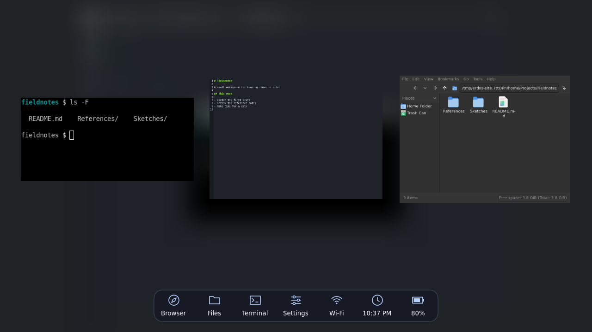
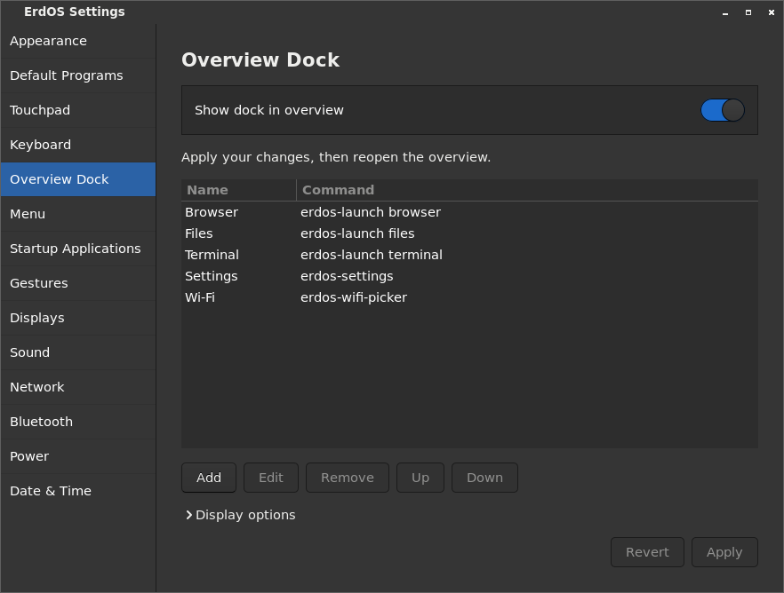
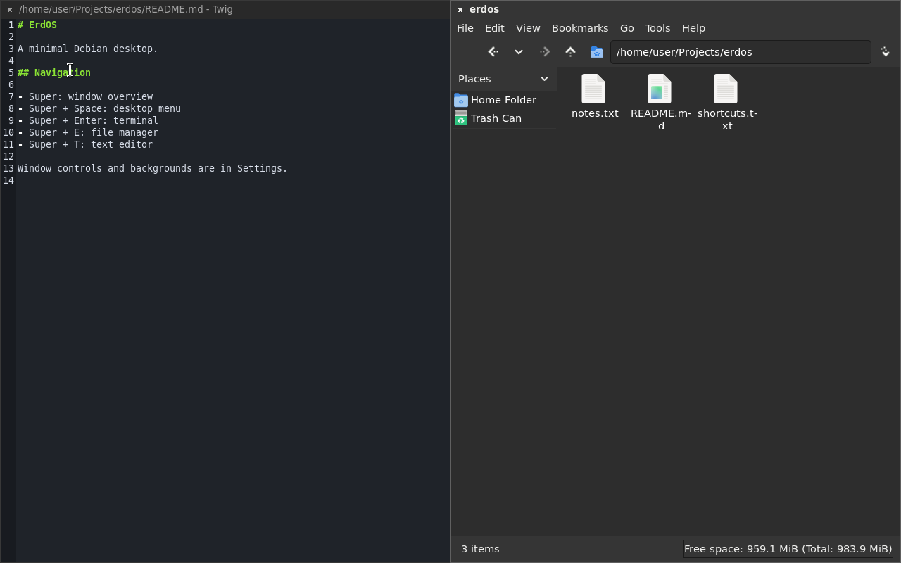
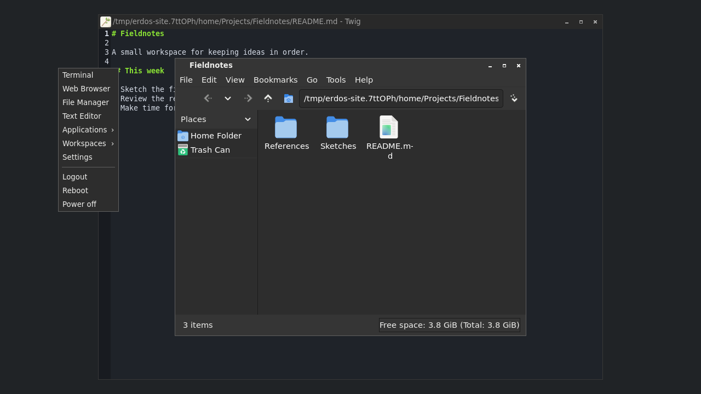

Sakura
Terminal
Super+Enter
ErdOS 1 Alpha 4
Debian 13, labwc and Wayland with keyboard shortcuts, touchpad gestures and a small set of everyday apps.

A small Debian system for everyday work, with the tools to make the desktop your own.


